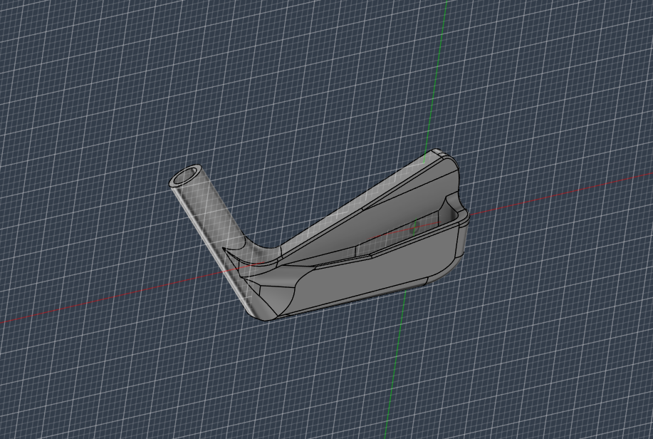
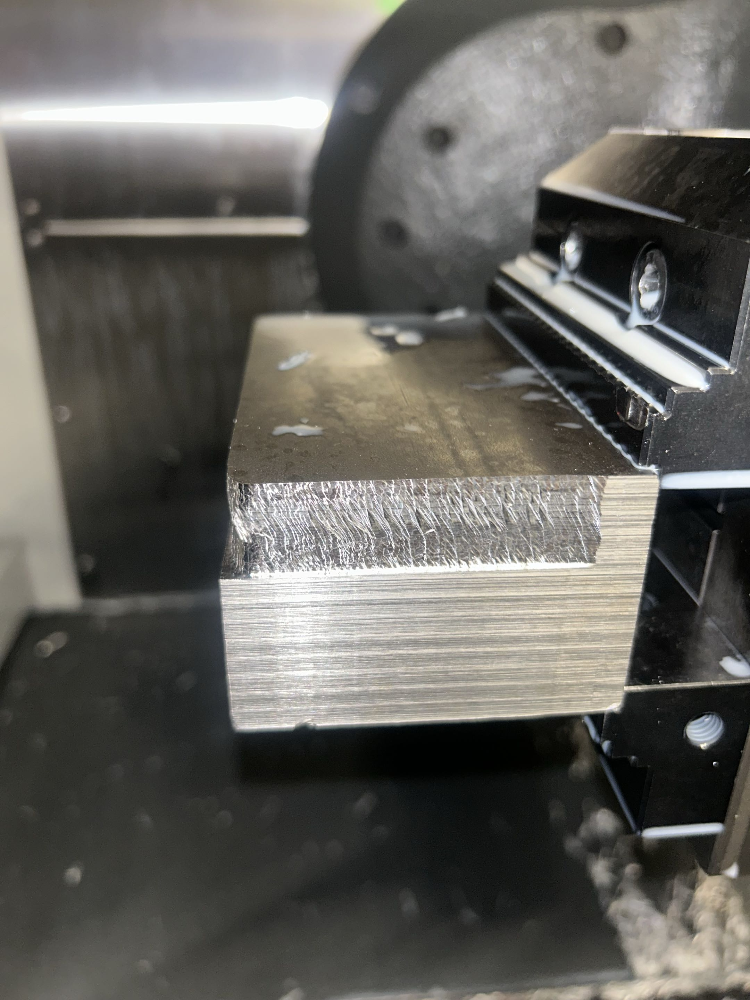
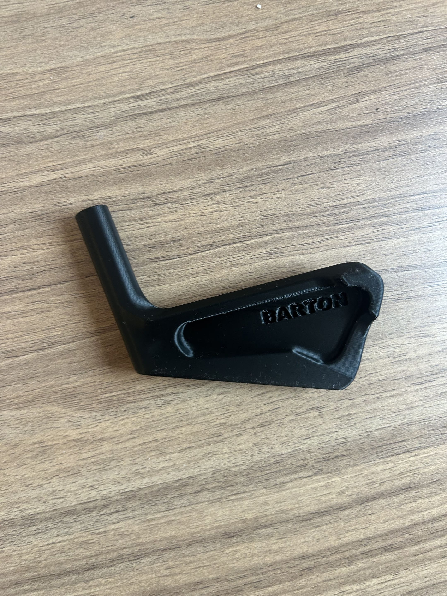

7 Iron Design Project | In Progress
Project Overview

Figure 1: Current Design Render
This project is a continuation of my putter work, but significantly more complex. A putter let me focus on manufacturing and basic mass properties, but an iron introduces real ball interaction physics. Things like launch angle, spin, and forgiveness all depend heavily on geometry and weight placement. That made this design much more involved both in CAD and in understanding the underlying mechanics.
The goal of this project was to design a fully customizable iron where key performance characteristics could be tuned to the player. Different golfers deliver the club differently, so instead of designing for an average swing, I wanted to create something that could be adjusted to match specific tendencies.
Design Approach

Figure 2: V2 CAD Geometry
The CAD process was much harder than the putter. The geometry of an iron is not simple, especially when trying to control how the club interacts with the ball. I spent a lot of time shaping the face, sole, and transitions to get something that both looked right and made sense physically.
The entire model is parametric, allowing key variables to be adjusted depending on the player. These include face angle, shaft angle, toe weighting, base weighting, face dimensions, and hosel geometry. The idea is that if a player has a consistent miss, for example an open face at impact, the weight distribution can be adjusted to help compensate.
Performance Considerations

Figure 3: V1 FEA Simulation
A big part of this project was understanding what actually affects ball flight. I looked into gear effect, launch conditions, and moment of inertia to guide design decisions. Weight placement plays a major role in both forgiveness and spin characteristics, so small changes in geometry can have noticeable effects.
I ran FEA to check how the face and body behave under load. While the exact numbers are less important than trends, it helped validate that the structure was stiff enough and that stress concentrations were not an issue. Most of the design decisions were driven by keeping the club stable while still allowing for customization.
Manufacturing Challenges

Figure 4: Milling Setup
This part has been significantly harder to machine than the putter. The geometry requires multiple setups and careful workholding, so I had to design custom soft jaws to hold the part securely during operations. Some features also required reaching deep into the part, which meant using longer endmills.
That introduced chatter issues that made it difficult to maintain surface quality. To work around this, I had to experiment with feeds, speeds, and setup rigidity to get acceptable results. There were definitely some less-than-ideal setups along the way, but they got the job done.
Problems and Tradeoffs

Figure 5: Chatter Issues
One of the biggest constraints was cost. The raw material alone is around $80, so mistakes are expensive. Ideally, this part would be forged and then finished machined, but full CNC machining was more accessible for me and gave more control over geometry.
There were also tradeoffs between design intent and manufacturability. Some shapes that made sense from a performance standpoint were difficult to machine cleanly, so compromises had to be made. This project ended up being just as much about figuring out what is actually practical to build as it was about design.
Prototype Progress

Figure 6: Printed Part
The current prototype is machined from 1018 steel and is close to final. There is still some finishing work left, but the overall geometry and structure are set. Compared to the putter, this project required much more iteration and problem solving throughout the entire process.
Once completed, this will serve as a baseline for further refinement and potentially a full set of irons built around the same concept.